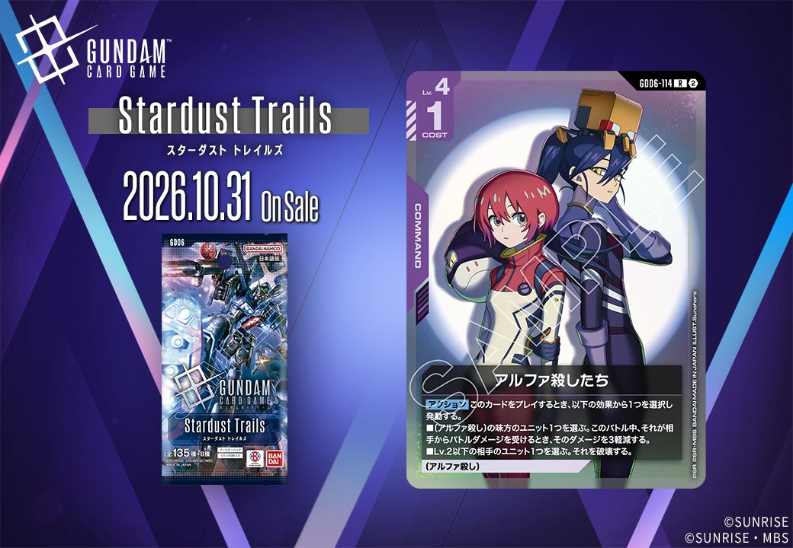
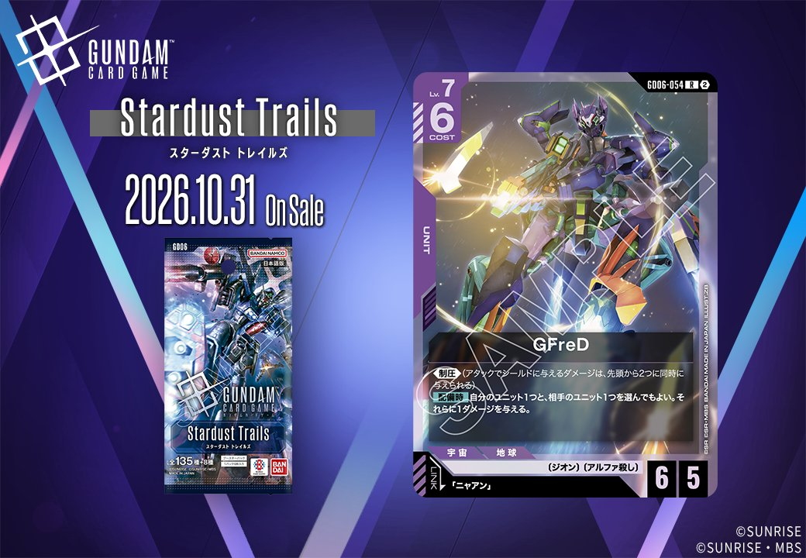
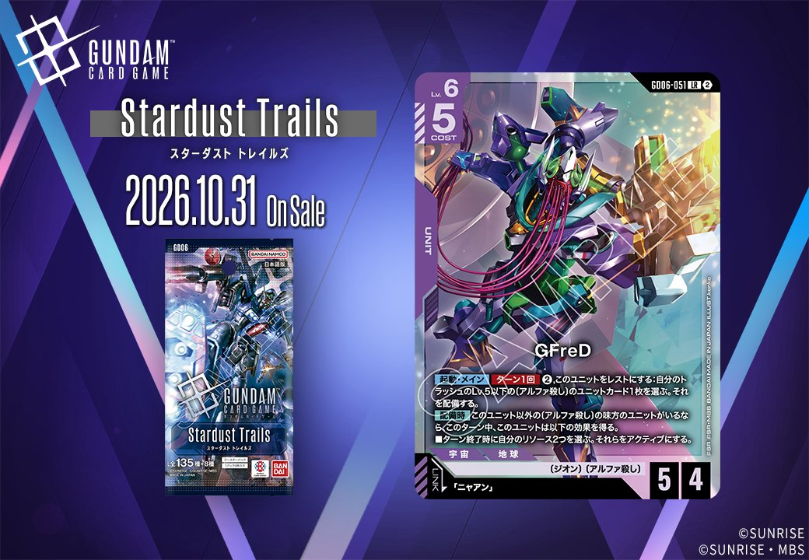
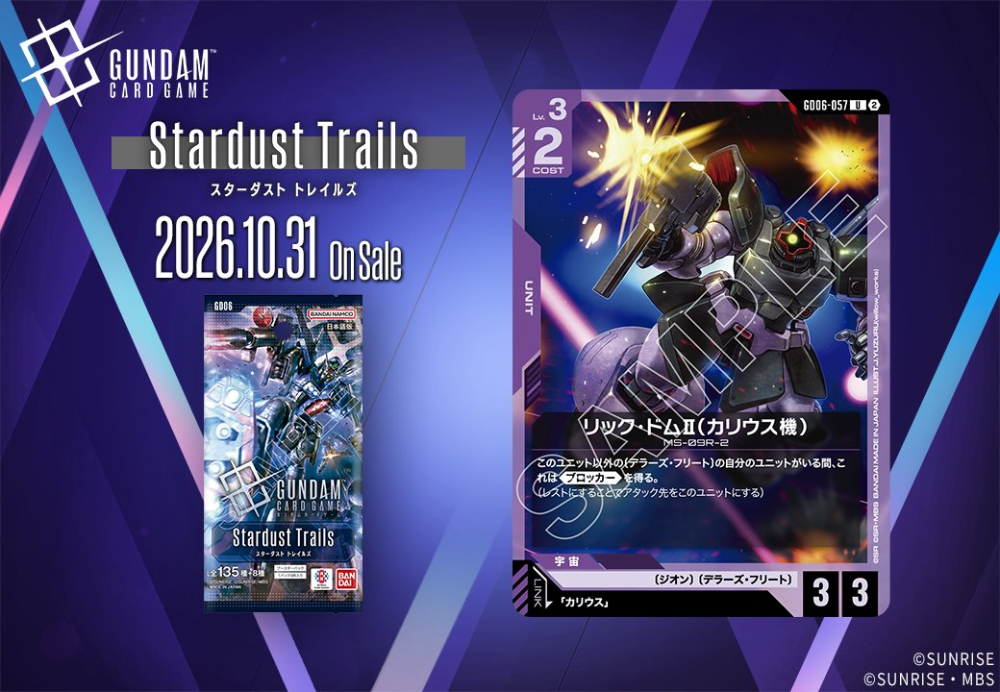

今回紹介するのは、2026年10月31日発売の新カード2枚です。収録パックの表記は、GD06-114「アルファ殺したち」がGD06、GD06-054「GFreD」がStardust Trailsとなっています。色はいずれも紫で、一方はCOMMANDの「アルファ殺したち」、もう一方は「ニャアン」をリンク条件に指定するUNITの「GFreD」です。

アルファ殺したち (GD06-114)
| 色 | 紫 | タイプ | COMMAND |
| Lv | 4 | コスト | 1 |
効果: 【アクション】このカードをプレイするとき、以下の効果から1つを選択し発動する。■〔アルファ殺し〕の味方のユニット1つを選ぶ。このバトル中、それが相手からバトルダメージを受けるとき、そのダメージを3軽減する。■Lv.2以下の相手のユニット1つを選ぶ。それを破壊する。
アルファ殺したちは、Lv.4・コスト1の紫のコマンドです。【アクション】として、2つの効果から1つを選んで使います。1つ目は、〔アルファ殺し〕の味方ユニットがこのバトル中に相手から受けるバトルダメージを3軽減する効果です。2つ目は、Lv.2以下の相手ユニット1つを破壊する効果になります。1つ目は対象の特徴を持つユニットが場にいないと機能しませんが、2つ目の条件は相手ユニットのLvだけなので、デッキ構成を問わず使えます。プレイにはLv.4が必要なため、先に並べられた低Lvのユニットを後から処理する使い方が中心になるでしょう。コスト1で除去と防御を状況に応じて選べる点は評価できます。

GFreD (GD06-054)
| 色 | 紫 | タイプ | UNIT |
| Lv | 7 | コスト | 6 |
| AP | 6 | HP | 5 |
| 特徴 | 〔ジオン〕、〔アルファ殺し〕 | ||
| リンク条件 | 「ニャアン」 | ||
効果: 《制圧》（アタックでシールドに与えるダメージは、先頭から2つに同時に与えられる）【配備時】自分のユニット1つと、相手のユニット1つを選んでもよい。それらに1ダメージを与える。
GFreDはLv.7・コスト6、AP6/HP5の紫のユニットで、特徴は〔ジオン〕と〔アルファ殺し〕、リンク先は「ニャアン」です。《制圧》でシールドへのダメージが先頭から2つに同時に入るため、終盤の詰めを早められます。【配備時】は自分と相手のユニット1つずつに1ダメージを与える効果で、同じ内容のガンダム・バルバトスアダプトと違い「選んでもよい」形になっています。自軍を傷つけたくない場面では使わずに済むのが利点でしょう。自分側の対象にガンダム・バルバトス（第1形態）を選べば、その後のアタック時に1枚ドローする条件を満たせます。


関連カード
-
 ガンダム・バルバトスアダプト(GD03-056)紫系デッキ内採用率36% (2722デッキ)
ガンダム・バルバトスアダプト(GD03-056)紫系デッキ内採用率36% (2722デッキ) -
 三日月・オーガス(ST05-010)紫系デッキ内採用率35.7% (2700デッキ)
三日月・オーガス(ST05-010)紫系デッキ内採用率35.7% (2700デッキ) -
 ガンダム・バルバトス（第1形態）(GD02-054)紫系デッキ内採用率34.4% (2598デッキ)
ガンダム・バルバトス（第1形態）(GD02-054)紫系デッキ内採用率34.4% (2598デッキ) -
 百錬(ST05-006)紫系デッキ内採用率25.9% (1958デッキ)
百錬(ST05-006)紫系デッキ内採用率25.9% (1958デッキ) -
 グレイズ改(ST05-004)紫系デッキ内採用率25.4% (1920デッキ)
グレイズ改(ST05-004)紫系デッキ内採用率25.4% (1920デッキ) -
 アナベル・ガトー(GD06-093)NEW紫系 — 同色・共通特徴: ジオン（新カード）
アナベル・ガトー(GD06-093)NEW紫系 — 同色・共通特徴: ジオン（新カード） -
 ガンダム試作2号機(GD06-049)NEW紫系 — 同色・共通特徴: ジオン（新カード）
ガンダム試作2号機(GD06-049)NEW紫系 — 同色・共通特徴: ジオン（新カード） -
 ニャアン(GD06-094)NEW紫系 — 同色・共通特徴: ジオン、アルファ殺し（新カード）
ニャアン(GD06-094)NEW紫系 — 同色・共通特徴: ジオン、アルファ殺し（新カード） -

GFreD(GD06-051)NEW紫系 — 同色・共通特徴: ジオン、アルファ殺し（新カード） -

リック・ドムⅡ(カリウス機)(GD06-057)NEW紫系 — 同色・共通特徴: ジオン（新カード）